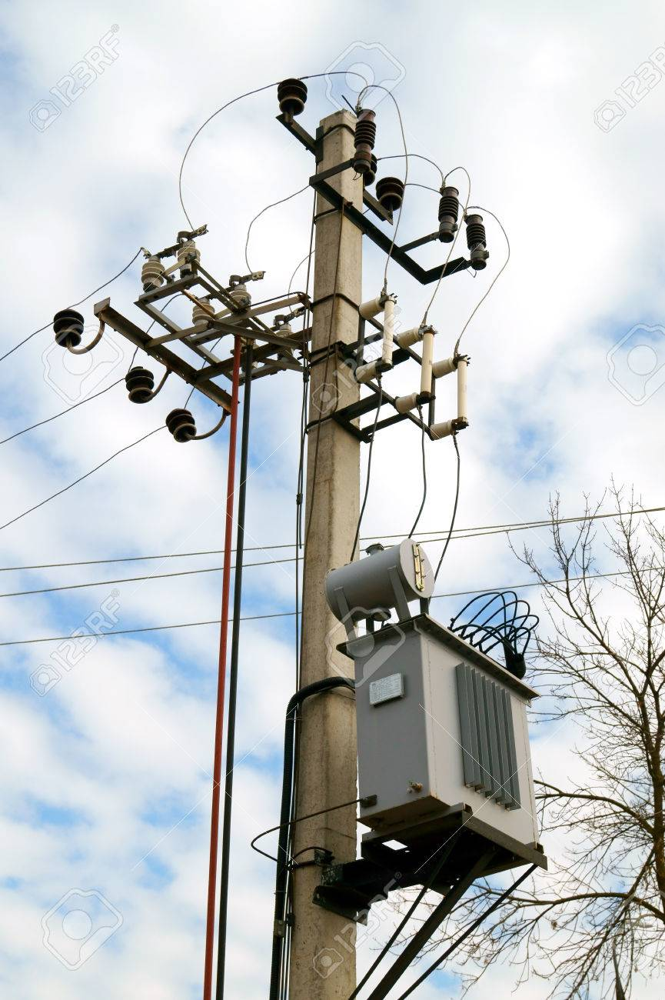

Un sistema de distribución de potencia es un sistema formado por tres subsistemas principales, los cuales son Generación, Transmisión y Distribución, cada uno esta conformado por partes aun mas pequeñas. En esta pagina web solo nos refiriremos a la para de distribución.
¿Por qué es importante los sistemas de distribución? |
|
Los sistemas de distribución son importantes porque mediante ellos es posible distribuir la corriente electrica a zonas urbanas, son el sistema ultimo que lleva la energia a los consumidores. Ayudan en:
|
 |
La ingeniería eléctrica es una amplica carrera con diversas ramas como ser: Generación, Transmisión y Distribución.
En esta pagina se hablara un poco de Distribución.